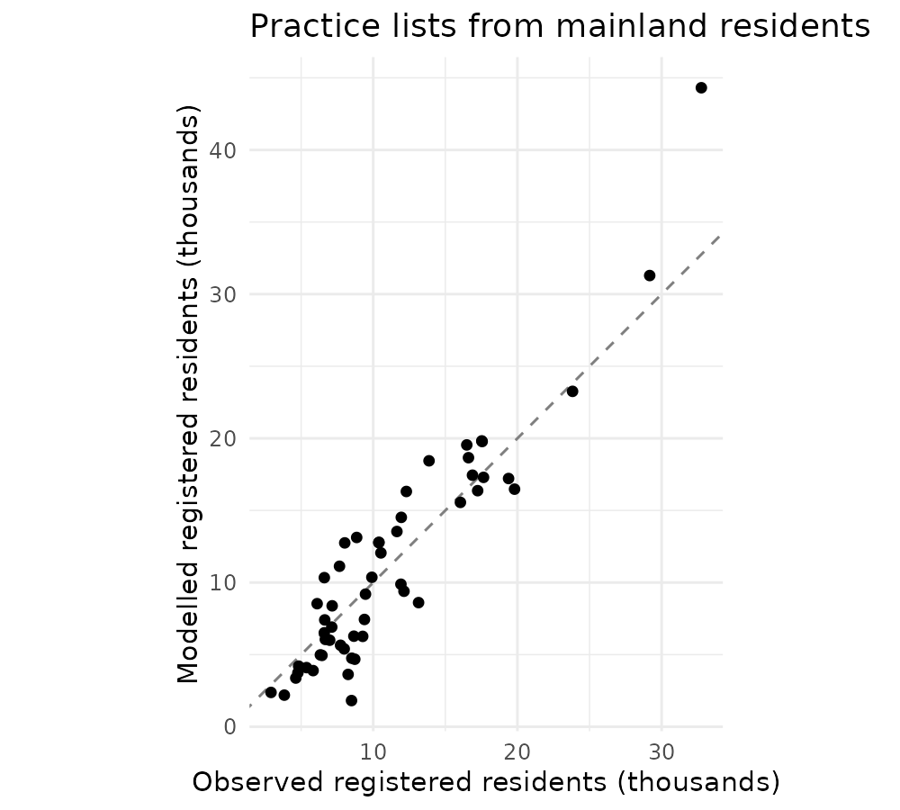
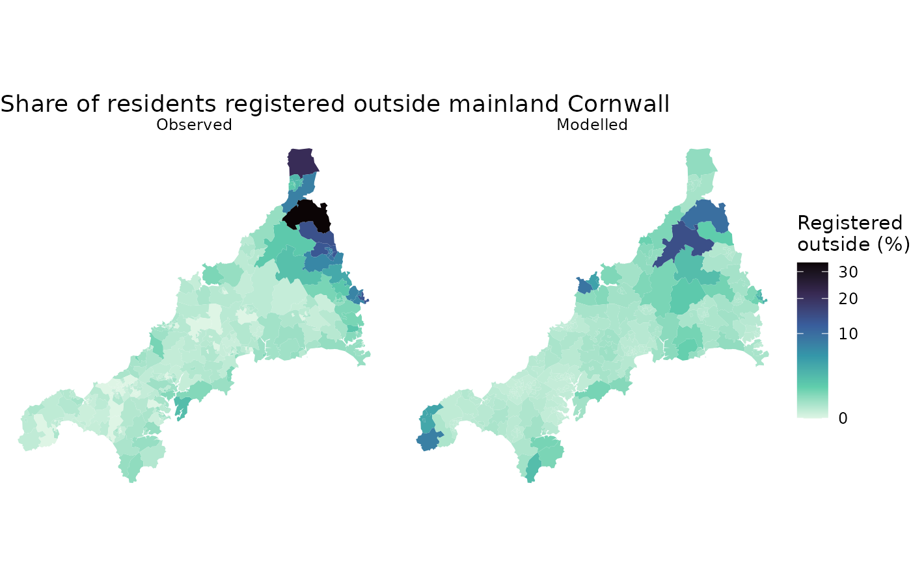
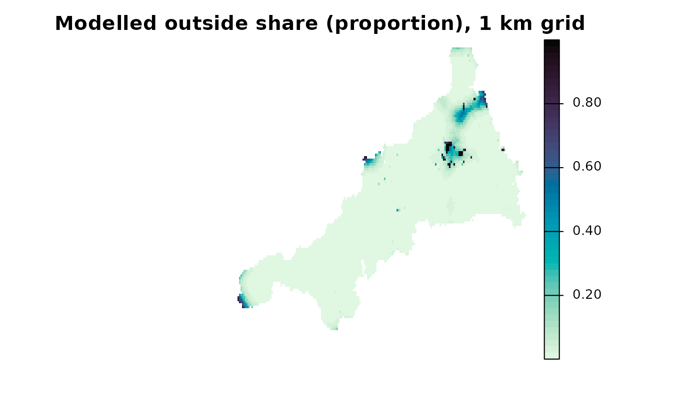
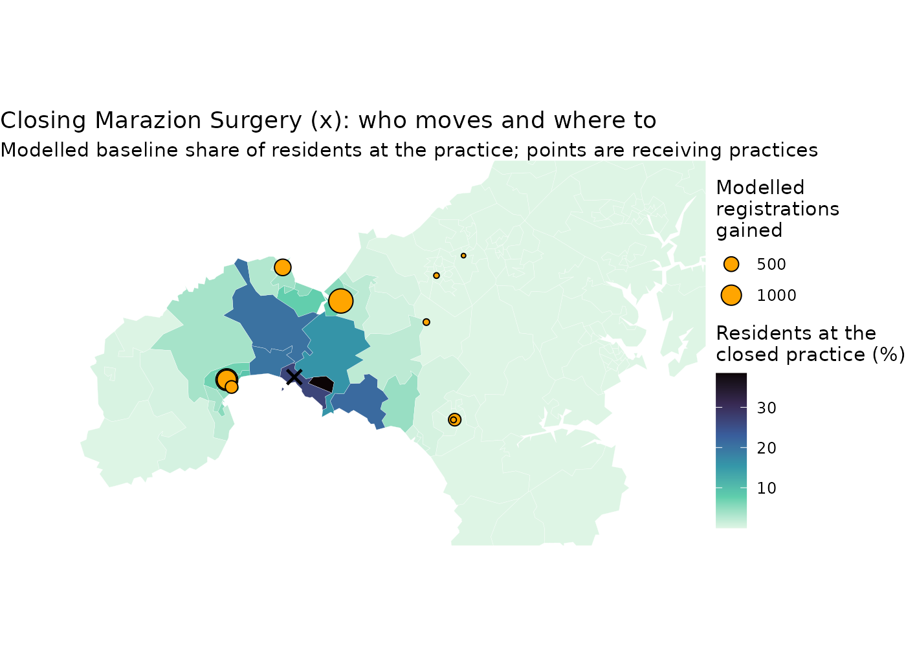

Fitting an allocation model to GP registrations in Cornwall
Source:vignettes/allocation-workflow.Rmd
allocation-workflow.RmdThis guide uses the bundled Cornwall GP data, described in The Cornwall GP example data.
This guide runs the experimental allocation workflow from start to finish: prepare inputs, declare a model, fit it to observed registrations, inspect the saved fit, predict at new locations, compare a change in one practice’s supply, declare a decay function of your own, and export the results and read them back in a fresh R session. Bootstrap intervals have their own guide, Bootstrap intervals for a fitted allocation model, on generated data.
The model is a corrected static conditional logit (CLM) with an explicit outside option. Each practice attracts residents in proportion to its supply, discounted by travel time; the outside option competes with all practices. For choosing between this model and an FCA index, see Choosing an FCA index or an allocation model. Preparing your own data explains counts, units, IDs and missing travel, and saved-result inspection describes the standard R methods used below. The interface is experimental.
The data
The model uses four of the bundled objects: small areas with their
registered residents (cornwall_lsoa), practices with their
GP full-time equivalents (FTE, cornwall_gp), registrations
by small area and practice (cornwall_flows) and travel
minutes between them (cornwall_travel). As in the other
guides, it covers mainland Cornwall only, because the Isles of Scilly
have no road link to the mainland.
# Mainland small areas and practices, as plain tables
areas <- cornwall_lsoa |>
filter(!scilly) |>
st_drop_geometry()
gp <- cornwall_gp |>
filter(!scilly) |>
st_drop_geometry()
# Travel minutes: small areas in rows, practices in columns
travel <- cornwall_travel[areas$lsoa, gp$practice]
# Demand: residents registered with any practice in England.
demand <- setNames(areas$registered, areas$lsoa)
# Supply: GP FTE excluding GPs in training.
supply <- setNames(gp$gp_fte_extg, gp$practice)
# Observed flows: registered residents by small area (rows) and practice.
observed <- matrix(
0,
nrow = nrow(travel),
ncol = ncol(travel),
dimnames = dimnames(travel)
)
keep <- cornwall_flows$lsoa %in% rownames(travel) &
cornwall_flows$practice %in% colnames(travel)
observed[cbind(cornwall_flows$lsoa[keep], cornwall_flows$practice[keep])] <-
cornwall_flows$patients[keep]
dim(travel)[1] 336 54 registered at_mainland_practices
604471 598974 Registrations are a stock: who is registered where in July 2026, not a count of visits. Because demand counts every registered resident, the outside option stands for registration with a practice outside mainland Cornwall (in Devon, for example, or on the Isles of Scilly). It is not unmet need: almost everyone is registered with some practice.
Prepare, declare and fit
prepare_allocation() aligns demand, supply and travel by
their names and checks them once. Unit and period labels are
declarations attached to the results; spax does not convert units.
clm_allocation() then declares the model: a Gaussian travel
kernel with scale σ (minutes) and a fitted outside weight v0.
# Labels kept with the inputs and every result derived from them
cornwall_units <- list(
demand_units = "registered residents",
demand_period = "July 2026",
supply_units = "GP FTE excluding GPs in training",
supply_period = "June 2026",
travel_units = "minutes"
)
inputs <- prepare_allocation(
demand = demand,
supply = supply,
distance = travel,
metadata = cornwall_units
)
model <- clm_allocation(
inputs = inputs,
family = "gaussian",
fit_v0 = TRUE # estimate the outside weight
)fit_allocation() runs one fit from each supplied start
and keeps the best converged one. Here the target is the small area ×
practice flow matrix and the loss is Poisson, chosen explicitly: asking
for counts does not choose a likelihood. Registrations are not
independent event counts, so treat the Poisson loss as a fitting
criterion rather than a full observation model. Joint Poisson fitting
does not force the modelled total to match the observed total.
# Three starting points, from a short to a long travel scale
starts <- rbind(
near = c(sigma = 3, v0 = 0.05),
middle = c(sigma = 6, v0 = 0.01),
far = c(sigma = 12, v0 = 0.002)
)
fit <- fit_allocation(
model = model,
observed = observed,
starts = starts,
lower = c(sigma = 0.5, v0 = 1e-6),
upper = c(sigma = 60, v0 = 10),
output = "flow", # fit the small area x practice matrix
loss = "poisson",
gradient = TRUE,
control = list(maxit = 300, factr = 10, pgtol = 1e-8)
)
# Every start, then the selected parameters as a table
summary(fit)<summary.ae_multistart_fit>
status: selected; selected start: near
loss disagreement: FALSE; parameter disagreement: FALSE
Supplied-start diagnostics (not a global-optimum or identification guarantee):
start loss eligible optim_convergence solver_converged residual seconds
near -3182000 TRUE 0 TRUE 0 0.735
middle -3182000 TRUE 0 TRUE 0 0.355
far -3182000 TRUE 0 TRUE 0 0.627
boundary status optim_message
FALSE eligible CONVERGENCE: REL_REDUCTION_OF_F <= FACTR*EPSMCH
FALSE eligible CONVERGENCE: REL_REDUCTION_OF_F <= FACTR*EPSMCH
FALSE eligible CONVERGENCE: REL_REDUCTION_OF_F <= FACTR*EPSMCH
solver_message log_parameter_gap loss_gap
converged 0.000e+00 0
converged 1.654e-07 0
converged 1.551e-07 0
Selected fit:
<summary.ae_problem_nfxp_fit>
model: clm
family: gaussian (sigma = travel scale)
allocation_form: clm
theta:
parameter estimate
sigma 4.35600
v0 0.01765
fit:
loss convergence seconds spectral_radius gradient
-3182000 0 0.726 0 TRUE
predicted:
min q25 median mean q75 max
5.907e-181 1.825e-44 1.166e-16 33.17 0.0006825 2932
state:
min q25 median mean q75 max
1.133 3.272 4.88 5.765 7.93 13.36
residual:
min q25 median mean q75 max
-1936 1.577e-67 3.719e-25 0.1541 1.634e-07 1209
as.data.frame(fit) parameter estimate
1 sigma 4.35551274
2 v0 0.01764985The summary keeps every start, its convergence, boundaries and messages. All three starts converge away from the bounds and stop very close to each other. The disagreement flag uses deliberately strict default tolerances, so read the gaps in the per-start table rather than the flag alone. Agreement among the supplied starts is a numerical check; it does not prove a global optimum or that the parameters are identified. A σ of about 4.4 minutes means registration is very local: a practice 9 minutes away keeps only about 12% of the pull it would have next door.
Fitted against observed
fitted() returns the saved fitted flows; nothing is
recomputed. Summing over small areas gives each practice’s modelled
registered list.
# Observed and modelled list size of each practice
practices <- data.frame(
practice = colnames(observed),
observed = colSums(observed),
fitted = colSums(fitted(fit))
)
cor(practices$observed, practices$fitted)[1] 0.9319953
ggplot(practices, aes(observed / 1000, fitted / 1000)) +
geom_abline(linetype = 2, colour = "grey50") +
geom_point() +
coord_equal() +
labs(
x = "Observed registered residents (thousands)",
y = "Modelled registered residents (thousands)",
title = "Practice lists from mainland residents"
) +
theme_minimal()
The model gives each practice an attraction proportional to its GP FTE and uses only supply and travel. Practices with more registered patients per GP FTE than their neighbours therefore have larger observed than modelled lists and sit below the dashed line.
What the observations identify
A good fit does not show that the travel kernel is right.
check_allocation() never changes the fit; it compares the
fitted model, on the same loss, with the same model without distance
decay (each small area chooses among the practices it can reach in
proportion to GP FTE), and reports the one-way trips each implies.
# The fit against an allocation without distance decay
check_allocation(model, fit)<ae_allocation_check>
comparator loss loss_difference contact trip_median trip_p90
fitted -3181928 0 0.9955 3 9
no_decay -1567076 1614852 0.9909 39 84
capacity_only NA NA NA NA NA
Trip lengths are one-way, in minutes, weighted by expected flows.
The fitted allocation reproduces the observations better than the allocation
without distance decay. The capacity-only comparator applies to facility totals only.Here the target is the small area × practice matrix, which records where each practice’s patients live, so dropping distance decay worsens the fit by a wide margin, and the fitted model’s trips are short (a median of a few minutes). When only practice totals are observed, the check also fits an allocation that shares the totals by capacity alone. If that, or the no-decay allocation, fits at least as well as the model, the totals do not identify distance decay: the fitted value then depends on which travel times were treated as reachable, not on the counts.
The outside share is the other observable output. Each small area’s modelled outside share can be compared with the share of its residents registered outside mainland Cornwall.
# Solve the model once at the fitted parameters
evaluated <- evaluate_allocation(model = model, theta = coef(fit))
# Outside shares and flows for the fitted small areas
baseline <- predict_allocation(
source = evaluated,
distance = travel,
demand = demand,
outputs = c("outside_share", "flow")
)
table(baseline$validity$status)
valid
336
# Observed and modelled outside shares in one long table
outside <- bind_rows(
data.frame(
lsoa = names(demand),
share = 1 - rowSums(observed) / demand,
source = "Observed"
),
data.frame(
lsoa = names(demand),
share = baseline$outputs$outside_share,
source = "Modelled"
)
) |>
mutate(source = factor(source, c("Observed", "Modelled")))
# Join to the small-area polygons for mapping
outside_map <- cornwall_lsoa |>
select(lsoa) |>
inner_join(outside, by = "lsoa")
ggplot(outside_map) +
geom_sf(aes(fill = 100 * share), colour = NA) +
facet_wrap(~source) +
scale_fill_viridis_c(
option = "mako",
direction = -1,
trans = "sqrt",
name = "Registered\noutside (%)"
) +
labs(title = "Share of residents registered outside mainland Cornwall") +
theme_void()
evaluate_allocation() solves the model once at fixed
parameters; it estimates nothing. predict_allocation() then
returns the requested outputs for any set of origins, with separate
validity flags. Here flow is requested demand times choice
probability, in registered residents. Requested demand only scales the
predicted flows; it never changes the saved practice loads.
Observed registration outside mainland Cornwall is concentrated in a few areas along the Devon border. A single constant outside weight cannot reproduce that pattern: the model spreads a small outside share everywhere and puts its largest values where practices are far away, so treat the modelled outside share as approximate.
Predict at new locations
Prediction does not need the fitted small areas. Each cell of the
bundled 1 km population grid has its own travel times to every practice,
so the saved model can predict at every populated cell. A
spatial mapping from requested origins to raster cells
turns one output into a map.
# Population grid, and the travel grid as a cell x practice matrix
pop <- read_spax_example("cornwall_pop.tif")
grid_travel <- values(read_spax_example("cornwall_gp_travel.tif"))
# Keep populated cells and the fitted practices, in the fitted order
populated <- which(is.finite(values(pop)[, 1]) & values(pop)[, 1] > 0)
grid_travel <- grid_travel[populated, colnames(travel)]
rownames(grid_travel) <- paste0("cell", populated)
# Predict at each cell; no demand is needed for probabilities
grid <- predict_allocation(
source = evaluated,
distance = grid_travel,
outputs = c("outside_share", "allocation")
)
table(grid$validity$status)
unknown_travel valid
73 6912 Cells on the Isles of Scilly have no travel time to mainland practices, so their prediction is marked unknown rather than imputed. Inspect these flags before reading a map.
# Which raster cell each requested origin belongs to
grid_spatial <- list(
template = pop,
cell_index = setNames(populated, rownames(grid_travel))
)
grid_outside <- predict_allocation(
source = evaluated,
distance = grid_travel,
outputs = "outside_share",
spatial = grid_spatial,
type = "raster" # return a map instead of a table
)
plot(
grid_outside,
axes = FALSE,
col = hcl.colors(50, "Mako", rev = TRUE),
main = "Modelled outside share (proportion), 1 km grid"
)
# Cells with an outside share above 0.5, and their share of the population
grid_pop <- values(pop)[populated, 1]
far_out <- grid$outputs$outside_share > 0.5
c(
cells = sum(far_out, na.rm = TRUE),
population_percent = round(
100 * sum(grid_pop[which(far_out)]) / sum(grid_pop),
2
)
) cells population_percent
81.00 0.08 Some grid cells far from every practice get a high outside share because the fitted travel scale is short and the outside weight is constant. The 81 cells above 0.5 hold 0.08% of the grid’s population, but their values are an extrapolation of the model, not a measure of unmet need. The grid population (WorldPop 2020) and the registrations (NHS England 2026) are different sources and dates, so the grid is used here only for locations.
Change one practice’s supply
A scenario changes the system and evaluates it again at the same parameters. Here Marazion Surgery is closed by setting its GP FTE to zero; known zero supply is kept, so the practice stays in the network with no attraction. This is a model-based, fixed-parameter scenario, not an estimate of what a real closure would cause: changing supply moves attraction, allocation and every practice’s modelled load together.
[1] "MARAZION SURGERY"
# Same inputs, with zero GP FTE at the closed practice
scenario_supply <- supply
scenario_supply[closed] <- 0
scenario_model <- clm_allocation(
inputs = prepare_allocation(
demand = demand,
supply = scenario_supply,
distance = travel,
metadata = cornwall_units
),
family = "gaussian",
fit_v0 = TRUE
)
# Evaluate at the fitted parameters; nothing is refitted
scenario <- evaluate_allocation(model = scenario_model, theta = coef(fit))
changed <- predict_allocation(
source = scenario,
distance = travel,
demand = demand,
outputs = c("outside_share", "flow")
)
# Modelled list sizes before and after
baseline_lists <- colSums(baseline$outputs$flow)
scenario_lists <- colSums(changed$outputs$flow)
practices <- practices |>
mutate(
baseline = baseline_lists,
scenario = scenario_lists,
change = scenario - baseline,
name = gp$name[match(practice, gp$practice)]
)
# The seven largest changes
practices |>
arrange(desc(abs(change))) |>
select(name, baseline, scenario, change) |>
head(7) name baseline scenario change
L82047 MARAZION SURGERY 5649.823 0.000 -5649.8233
L82036 BODRIGGY HEALTH CENTRE 16315.213 17795.627 1480.4144
L82038 ATLANTIC MEDICAL GROUP 14519.656 15698.907 1179.2517
Y01050 ROSMELLYN SURGERY 11129.279 12033.173 903.8934
Y01922 STENNACK SURGERY 9882.199 10532.752 650.5532
L82070 SUNNYSIDE SURGERY 6055.999 6547.852 491.8537
Y01051 MORRAB SURGERY 3627.982 3985.176 357.1943
# Change in the number of residents modelled outside mainland practices
c(
outside_change = sum(demand * changed$outputs$outside_share) -
sum(demand * baseline$outputs$outside_share)
)outside_change
10.73859 The modelled list of the closed practice moves to nearby practices in Penzance and St Ives Bay, with a small part going to the outside option. Where a closed practice has no near neighbour, a larger part goes to the outside option; that follows from the constant outside weight, not from evidence about where patients would go.
# Each area's modelled share of residents at the closed practice
moved <- data.frame(
lsoa = names(demand),
share = baseline$outputs$flow[, closed] / demand
)
moved_map <- cornwall_lsoa |>
select(lsoa) |>
inner_join(moved, by = "lsoa")
# Practices that gain more than 10 modelled registrations, with locations
gained <- cornwall_gp |>
select(practice) |>
inner_join(
practices |>
filter(change > 10) |>
select(practice, change),
by = "practice"
)
# Map window over west Cornwall, in British National Grid metres
west <- st_bbox(
c(xmin = 130000, ymin = 18000, xmax = 185000, ymax = 48000),
crs = st_crs(cornwall_lsoa)
)
ggplot() +
geom_sf(
data = moved_map,
aes(fill = 100 * share),
colour = "white",
linewidth = 0.05
) +
geom_sf(data = gained, aes(size = change), shape = 21, fill = "orange") +
geom_sf(
data = filter(cornwall_gp, practice == closed),
shape = 4,
size = 3,
stroke = 1.2
) +
scale_fill_viridis_c(
option = "mako",
direction = -1,
name = "Residents at the\nclosed practice (%)"
) +
scale_size_area(name = "Modelled\nregistrations\ngained") +
coord_sf(xlim = west[c("xmin", "xmax")], ylim = west[c("ymin", "ymax")]) +
labs(
title = "Closing Marazion Surgery (x): who moves and where to",
subtitle = paste(
"Modelled baseline share of residents at the practice;",
"points are receiving practices"
)
) +
theme_void()
Your own decay function
decay_kernel() declares a decay function of your own. It
takes a function of distance and sigma, a
name, a label for what sigma means
(parameter) and any fixed extra arguments
(args). The kernel below gives full weight to practices
within 3 minutes and decays as a Gaussian beyond that, with
sigma the scale of the decay.
# Full weight within `plateau` minutes, Gaussian decay beyond
plateau_kernel <- decay_kernel(
function(distance, sigma, plateau) {
ifelse(
distance <= plateau,
1,
exp(-(distance - plateau)^2 / (2 * sigma^2))
)
},
name = "plateau",
parameter = "scale",
args = list(plateau = 3)
)
plateau_kernel<spax_decay_kernel> plateau
sigma: scale
bounds on sigma: 0 to Inf
defined at distance 0: yes
smooth in sigma: yes
fixed arguments: plateau = 3
function:
function (distance, sigma, plateau)
{
ifelse(distance <= plateau, 1, exp(-(distance - plateau)^2/(2 *
sigma^2)))
}A declaration is plain data. It keeps the function’s source text and
rebuilds the function whenever it is used, so the function can use only
its arguments, base R, pkg::fn calls and args.
Declaring it also runs the function on a grid of distances and refuses
one whose weights are not finite, nonnegative and non-increasing in
distance; ?decay_kernel lists the rules. A declaration
works wherever a decay method is accepted, including
calc_decay() and the FCA functions. Here it takes the place
of "gaussian" in clm_allocation(), and the fit
below repeats the Gaussian fit’s starts and bounds.
plateau_model <- clm_allocation(
inputs = inputs,
family = plateau_kernel, # a declaration instead of "gaussian"
fit_v0 = TRUE
)
plateau_fit <- fit_allocation(
model = plateau_model,
observed = observed,
starts = starts,
lower = c(sigma = 0.5, v0 = 1e-6),
upper = c(sigma = 60, v0 = 10),
output = "flow",
loss = "poisson",
gradient = TRUE,
control = list(maxit = 300, factr = 10, pgtol = 1e-8)
)
coef(plateau_fit) sigma v0
3.57932959 0.03066002 summary(plateau_fit) shows how closely the starts agree.
The sigma of a declared kernel is the scale of that kernel,
so 3.58 minutes for the plateau kernel and 4.36 minutes for the Gaussian
kernel are not comparable values. compare_allocations()
puts the two fits side by side. Given the models as well, it checks that
both fits use the same flow matrix, loss, inputs and travel times, which
it requires before it reports a loss difference.
# Loss differences are measured from the first fit, the Gaussian
comparison <- compare_allocations(
fits = list(gaussian = fit, plateau = plateau_fit),
models = list(gaussian = model, plateau = plateau_model)
)
as.data.frame(comparison)[
c("specification", "parameters", "loss_difference", "count_correlation")
] specification parameters loss_difference count_correlation
1 gaussian sigma=4.356, v0=0.01765 0.00 0.8905881
2 plateau sigma=3.579, v0=0.03066 52820.34 0.8552432Measured from the Gaussian fit, the plateau fit’s Poisson loss is
higher by 52,820 and its fitted flows correlate with the observed flows
at 0.86, against 0.89 for the Gaussian fit. These figures say how close
each kernel’s fitted flows come to these registrations under one
criterion; they do not show which kernel describes how residents choose
practices. A saved fit that uses a declared kernel keeps the kernel’s
code and runs it when the fit is used, so read saved fits only from
sources you trust; a kernel declared with smooth = FALSE,
such as a cutoff, can be evaluated but not fitted.
Save and reload
The evaluated scenario carries a small prediction snapshot. Saving it does not keep the model or the travel matrix, and the restored object predicts the same values.
# Save the evaluated scenario and read it back
saved <- tempfile(fileext = ".rds")
saveRDS(scenario, saved)
restored <- readRDS(saved)
# The restored object predicts exactly what the original did
stopifnot(identical(
predict_allocation(
source = restored,
distance = travel,
demand = demand,
outputs = c("outside_share", "flow")
),
changed
))
unlink(saved)Export and reload in a fresh session
CSV files make saved tables available to other software but drop R classes and attributes. Keep an RDS bundle alongside them to preserve the fit, declarations, units and the complete results.
export_dir <- tempfile("allocation-results-")
dir.create(export_dir)
# One CSV file per table
export_tables <- list(
parameters = as.data.frame(fit),
practices = practices
)
for (name in names(export_tables)) {
write.csv(
export_tables[[name]],
file.path(export_dir, paste0(name, ".csv")),
row.names = FALSE
)
}
# One RDS bundle with the full R objects
bundle_path <- file.path(export_dir, "allocation-results.rds")
saveRDS(
list(
fit = fit,
scenario = scenario,
closed = closed,
tables = export_tables
),
bundle_path
)
list.files(export_dir)[1] "allocation-results.rds" "parameters.csv" "practices.csv" Finally, a new R process with the installed package reads the bundle. It checks the saved tables, predicts the scenario again from the bundled Cornwall travel times, and prints and plots the saved fit without refitting.
# Write a short script for a new R process
child_path <- tempfile(fileext = ".R")
literal <- function(x) paste(capture.output(dput(x)), collapse = "\n")
writeLines(c(
# Use the same installed spax and read the bundle
paste0(".libPaths(c(", literal(dirname(find.package("spax"))), ", .libPaths()))"),
"library(spax)",
paste0("saved <- readRDS(", literal(bundle_path), ")"),
# The saved tables match the saved objects
"stopifnot(identical(as.data.frame(saved$fit), saved$tables$parameters))",
# Predict the closure scenario again from the bundled travel times
"areas <- sf::st_drop_geometry(cornwall_lsoa)",
"gp <- sf::st_drop_geometry(cornwall_gp)",
"travel <- cornwall_travel[areas$lsoa[!areas$scilly], gp$practice[!gp$scilly]]",
"demand <- setNames(areas$registered[!areas$scilly], areas$lsoa[!areas$scilly])",
"flow <- predict_allocation(saved$scenario, travel, demand = demand, outputs = 'flow')$outputs$flow",
"stopifnot(isTRUE(all.equal(unname(colSums(flow)), unname(saved$tables$practices$scenario))))",
"stopifnot(colSums(flow)[[saved$closed]] == 0)",
# Summaries and plots work without refitting
"stopifnot(inherits(summary(saved$fit), 'summary.ae_multistart_fit'))",
"print(summary(saved$fit))",
"plot_path <- tempfile(fileext = '.pdf')",
"grDevices::pdf(plot_path)",
"plot(saved$fit, type = 'fit')",
"grDevices::dev.off()",
"stopifnot(file.info(plot_path)$size > 0)",
"unlink(plot_path)",
"cat('Fresh installed saved-result inspection passed\\n')"
), child_path)
# Run it with a clean Rscript and stop if it fails
rscript <- file.path(
R.home("bin"),
if (.Platform$OS.type == "windows") "Rscript.exe" else "Rscript"
)
status <- system2(rscript, c("--vanilla", shQuote(child_path)))
stopifnot(status == 0L)
unlink(child_path)Sources
Sources, dates and licences of the Cornwall data are listed in The Cornwall GP example data and in
system.file("COPYRIGHTS", package = "spax").